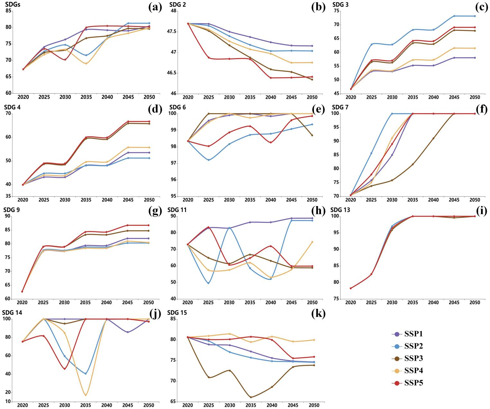

03 · Case Study
All scenarios improve; SSP1 / SSP2 / SSP5 reach the highest by 2050.
The key fluctuation period where trajectories diverge.
SDG 6/7/13/14 strong (>90) · SDG 2/15 decline · SDG 11 fluctuates
